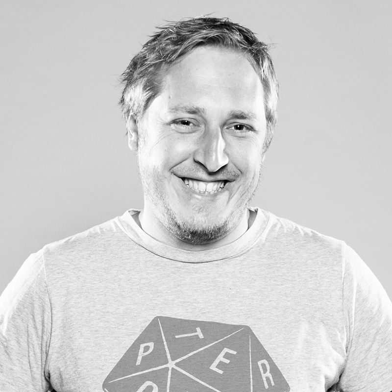

Team
Unser Team ist ein Mix aus Kommunikationsdesign- und Software-Engineering-Studenten. Dadurch
können wir aus
einem vielfältigen Pool an Erfahrungen schöpfen.

Lukas Lögler (28),
Kommumikationsdesigner
Will die ganze Welt sehen und dafür so wenig wie möglich bezahlen. Notfalls schläft er am Straßenrand. Könnte sich durch jedes Land futtern und hat keine Scheu Grenzen auszuloten.
Stephan Lawson (22), Kommunikationsdesigner
Reist am liebsten in andere Städte um mit Gleichgesinnten über Mauern zu hüpfen. Eigentlich nimmt er sich auch immer vor im Urlaub zu arbeiten, denn da sollte man ja eigentlich Zeit haben. Klappen tut es aber nie.
Anna Klokow (23),
Kommunikationsdesignerin
Macht am liebsten Städtetrips. Wurde schon am ersten Tag bei ihrem Urlaub in Rom um fünfhundert Euro erleichtert. Shoppen fiel leider aus, der Urlaub war aber trotzdem schön.
Julian Pellduat (25),
Kommunikationsdesigner
Hat für den Sommerurlaub kein Geld da er viel lieber im Winter in die Berge fährt um Snowboard zu fahren.
Benedikt Schnurr (25),
Kommunikationsdesigner
Am liebsten bereist er Städte. Die schönsten sind mit viel Wasser drum herum. So zählen Venedig, Hamburg, Amsterdam und natürlich Konstanz zu seinen absoluten Favoriten.
Julien Kuny (22),
Kommunikationsdesigner
Ist von der eigenen Hausparty abgehauen um mit dem bestem Freund ans italienischem Mittelmeer zu fahren. Neue Städte und Orte, besonders die am Wasser gelegenen ziehen ihn an, sei es London, Amsterdam, Hamburg oder Konstanz.
Pascal “Ayin” Rüttenauer (23), Kommunikationsdesigner
Entspricht voll dem Cliche, dass alle Asiaten Kung Fu können. Hat Konstanz erst lieben gelernt als er von einem Jahr Shanghai zurückkam. Wäre am liebsten mehr in Hong Kong oder auf Reisen. In der Zwischenzeit übt er fleißig weiter sein Kame-Hame-Ha…bisher vergeblich…
Timotheus Ruprecht (26),
Software enigneer
Einmal im Jahr geht seine Reise in ein Land in dem er noch nicht war. In Deutschland wird er am meisten von München angezogen, wo er die Stadt durch seine Freunde kennen und lieben gelernt hat.
Timo Weiss (25),
Software enigneer
War schon in vielen deutschen Städten, ohne etwas von ihnen zu sehen. Bevorzugt Sommer über Winter, Wasser über Schnee.
Nicolai Löffler (23),
Software enigneer
Er reist regelmäßig mit Mitfahrgelegenheiten durch Deutschland und fühlt sich eigentlich überall Zuhause. Eine gemütliche Couch zieht er dabei stets einem Hotel vor.
Seine Lieblingsreiseziele sind Hamburg, Berlin und Freiburg.

Steffen Gorrenflo (27),
Software enigneer
Geht gern dahin wo es warm ist. Deshalb ging es auch schon nach Mittel- und Südamerika. Aber da es im Sommer in Konstanz auch warm ist, bleibt er auch am liebsten am schönen Bodensee und geht segeln.
Michael Knoch (23),
Software enigneer
Bereist am liebsten Großstädte um Musik und Kultur zu erleben. Neben seiner großen Liebe zu Berlin gefällt ihm London, Paris und natürlich die wunderschöne Weltmetropole Konstanz.
Dennis Moosmann (26),
Software enigneer
Wenn er während der Urlaubszeit mal nicht arbeiten muss, zieht es ihn meist in eine Metropole, in der er zuvor noch nicht war. Am besten gefiel es ihm in Hamburg,
wo sowohl kulturelle als auch kulinarische Highlights gibt.

 Github
Github Facebook
Facebook{kind=link}
{kind=link}
{kind=link}
{kind=link}
{kind=link}